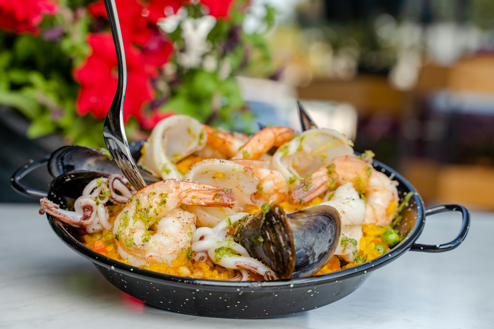
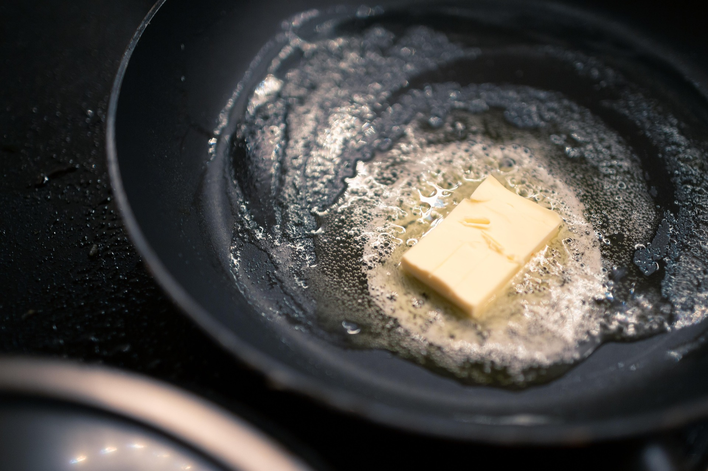

Paella

Description
Seafood paella is a vibrant, aromatic Spanish dish traditionally hailing from the region of Valencia.
This savory one-pan meal is known for its striking combination of fresh seafood, such as shrimp, mussels, clams, and squid,
along with a rich medley of vegetables, saffron-infused rice, and seasonings. The dish is typically cooked in a wide, shallow pan,
allowing the ingredients to cook together harmoniously while absorbing the flavors from the spices and seafood stock.
The result is a colorful, flavorful dish that captures the essence of the Mediterranean.
What makes seafood paella truly special is its ability to balance the briny richness of the seafood with the
earthy undertones of saffron and paprika, creating a depth of flavor that’s both complex and comforting.
The rice, cooked to perfection, soaks up all the juices and seasonings, forming a delicious base.
Paella is often served with a wedge of lemon for an added burst of freshness, and the dish can be enjoyed with a glass of crisp white wine or sangria.
Its combination of textures and vibrant flavors makes it a celebratory meal perfect for sharing among friends and family.
Ingredients
- 2 cups Bomba or Arborio rice
- 4 cups seafood stock (or chicken stock)
- 1 lb shrimp, peeled and deveined
- 1 lb mussels, cleaned
- 1 lb clams, cleaned
- 1/2 lb squid, cleaned and sliced into rings
- 1 onion, finely chopped
- 2 cloves garlic, minced
- 1 red bell pepper, diced
- 1 green bell pepper, diced
- 1 cup peas (fresh or frozen)
- 1/2 tsp saffron threads
- 1 tsp smoked paprika
- 1/4 cup olive oil
- Salt and pepper to taste
- 1 lemon, cut into wedges
- Fresh parsley, chopped (for garnish)

Steps
- In a large paella pan or wide skillet, heat the olive oil over medium heat. Add the onion and bell peppers, sautéing until softened.
- Add the garlic and cook for another minute until fragrant.
- Stir in the saffron threads and smoked paprika, cooking for 1-2 minutes.
- Add the rice, stirring to coat it in the oil and spices.
- Pour in the seafood stock and bring to a simmer. Season with salt and pepper.
- Reduce the heat to low and let the rice cook for about 10 minutes without stirring.
- Add the shrimp, mussels, clams, and squid on top of the rice. Press them gently into the rice.
- Cover the pan with a lid or aluminum foil and cook for an additional 10-15 minutes, or until the seafood is cooked through and the rice is tender.
- Remove from heat and let it rest for 5 minutes.
- Garnish with peas, fresh parsley, and lemon wedges.
Checkout My Other Pages Below!